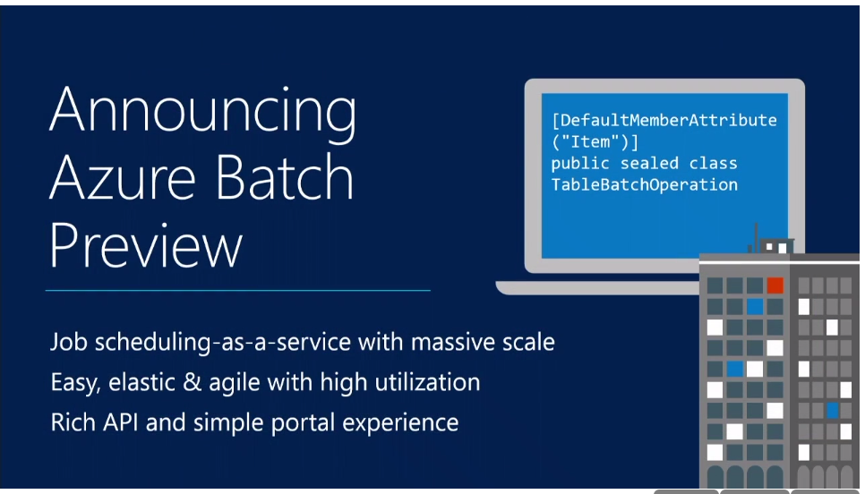
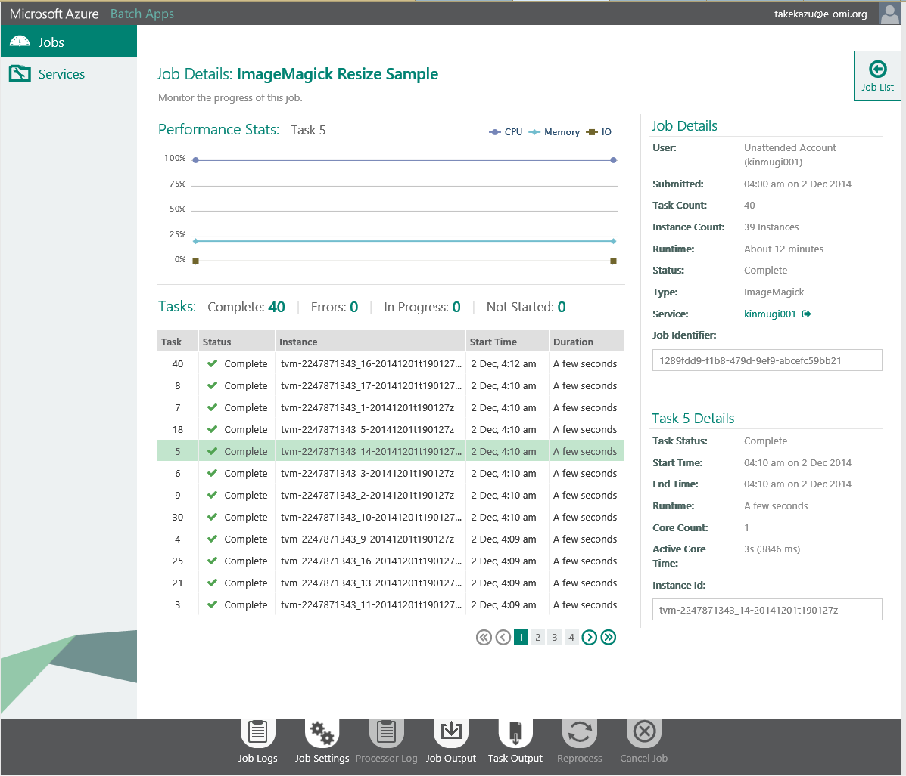
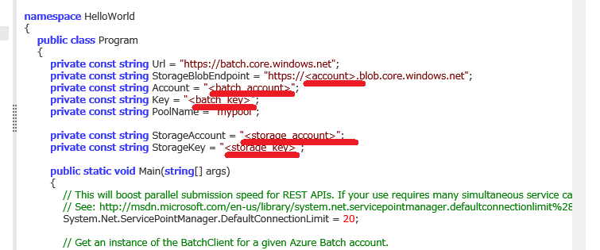
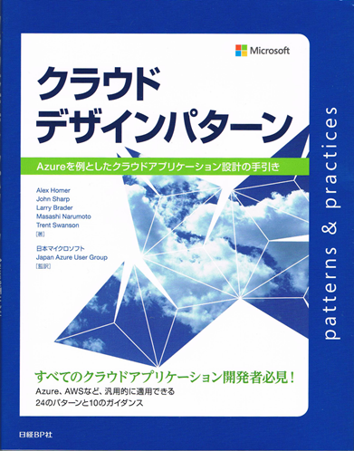
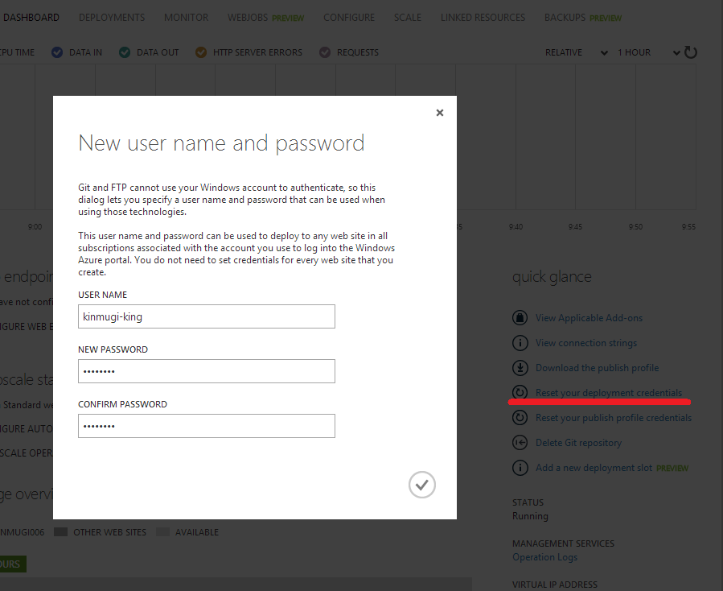

GoAzure 2015 でAzureの永続化について話をしてきました
GoAzure 2015の2つのセッションで喋ってきました。ひとつでは、Azure Storageの概要からIaaSのDiskについてまでを「Persistence on Azure - Microsoft Azure の永続化」でみっちり53分ほど、もうひとつは、「しばやん」のセッション(GoAzure 2015 でクラウドデザインパターンと Azure Websites について話してきました) にちょっとお邪魔。
しばやんのセッションは、しばやんが気持ちよく喋ってるので間に割り込むのが難しく、しゃべりの修行の必要性を感じましたね。今後の課題です。
Persistence on Azure - Microsoft Azure の永続化
スライドは、SlideShareに公開しています。
Persistence on Azure - Microsoft Azure の永続化
セッション、「Persistence on Azure - Microsoft Azure の永続化」は、資料を作り始めたら80ページ、90ページと順当に増えていって、到底50分に収まりそうもなく非常に難儀し、最終的にIaaSのDisk（Block Device）を落とし所にしてStorageの概要を話す形にしました。Azure Storageの特徴は、データセンターの構成や内部構造が絡んで、冗長構成とパフォーマンス特性に現れてくるので、どうしてそうなっているのかあたりを含めつつ短時間で話をするのはなかなか難しいです。
もう少し、Tableも交えて話すと、Azure Storageという共通の仕組みの上に、NoSQLとBlock Device（VM Disk）が乗ってることの素晴らしさが伝わったんじゃないかと思うと少々残念です。クラウドベンダーとしてのMicrosoftという観点から見ると、Storage共通基盤は投資効果が高く、他のベンダーとの差別化ができるポイントではないかと思うので、さらなる今後の発展に期待しています。
榎本さんのセッション 「GoAzure2015 - オープンソース.NETと Mono / Xamarin の今後について」が同じ時間の開催になってしまって見れなかったのが残念でした。自分で聞きたかったから、「台湾でばかり喋ってないで日本でも話してくれないか」とセッションに誘ったのに・・・ orz
後になって、クラウドデザインパターン色を入れても良かったのかなと思いつつも、イベントを楽しめました。聞きたいセッションが被り過ぎてたのが残念と言えば残念ですが、非常に充実したイベントでした。
謝辞
榎本さん、酒井さん、森島さん、しばやん、セッションお疲れ様でした。
JAZUGの皆さん、Microsoftの皆さん、スポンサーの皆さん、関係者の皆さん本当にありがとうございました。いつも裏方から表方までありがとうございます。
参加者の皆様、ありがとうございました。
Introduction to Azure Batch
※本記事は、Azure Advent Calendar 2014への寄稿記事です。
最近あまりに Azure の新機能が続々と出てくるので、なかなかフォローが難しですが、そんな時は、No.1のBlogと、 twitterで#azurejpを見ておけば良いですね。
そんな数ある今年のAzure新機能の中で、DocumentDBと、Batchの２つがお気に入りです。DocumentDBについては、過日仙台で話をしたので、その時の資料を観てもらうことににして、今回はAzure Batchを紹介します。 公式名称は、Batchということなのですが、一般名称を製品名に使うのは紛らわしいので止めて欲しいですが、ここでは、それを曲げて、Batchと書きます。
Batchは、2014/10/28 に行われた TechEd Europe の Keynote でお披露目されました。その時の動画が公開されています。 開始から 1:11 ぐらいからBatchの紹介が始まって、1:15 から Mark Russinovich がblenderを使った3Dレンダリングを見せてくれます。そこだけなら、そんなに長くないしお勧めです。
.
Batch とは
簡単に言うと、バッチ処理向けのPaaSです。WorkerRoleを使ってバッチ処理を組むのに比べると、ジョブ·キュー、スケジューラ、VMのプロビジョニングなどをアプリケーション側で用意する必要がありません。また既存のexeファイルをクラウド上で大量に実行することなどが容易に出来るようになっています。Microsoft内部では、Media Serviceが動画のエンコードの処理の部分で使っているそうです。Batchのコンセプトと用語について説明します。
Azure Batch Account
Batchサービスを使うには、Bach アカウントが必要で、そのアカウントはポータルで作成します。アカウントを作成すると、サブスクリプション、リージョン、アカウント名とキーが確定します。アカウント名とキーはコードで利用します。

SDK
Bachでは、低レベルのHTTP REST APIと、高レベルの Batch Apps を用意しています。現在のところ、 .NET 向けBatch Apps Cloud SDK、Batch Apps Client SDKと、python 向け SDKが用意されていて、Visual Studio 向けの extensionもあります。
Azure Batch REST API
低レベルのHTTP REST API では、VM pool の管理、work item の実行を柔軟にコントロールすることができます。この方法では、あなたのリソースを完全に制御できますが、タスク実行パイプラインを管理するためにクライアントが必要です。
Azure Batch Apps
もう一つの高レベルの仕組みとして、Batch Appsと呼ばれる機能が用意されています。この仕組みでは、バッチワークロードを登録し、クライアントあるいは、Batch Apps portal から実行することが出来るなどよりユーザーよりの管理機能を用意しています。
Pools
バッチを実行する、ノードのグループです。Poolは、複数のVMで構成され、VMは、auto scaling rules で増減します。PoolへのVMの追加が必要な場合は、自動的に新規ノードが作成・追加されます。
Task Virtual Machines (TVMs)
TVMs は、Poolを構成する、compute nodeの１つです。Batch用に構成された Web/Worker Role と思ってください。scalable で stateless な仮想マシンとして利用できます。Poolに TVMs が追加される場合は、新規にクリーンな仮想マシンが用意されます。そのため、Poolの作成には少々時間がかかります。初期ノード数を指定して試してみたところ、1ノードで8分、100ノードぐらいの時間がかかりました。（Japan West、A1）

Work Items
Work Itemsは、アプリケーションがプールでTVMs上で実行される方法を指定するテンプレートです。スケジューリングの設定（execute once とか 実行時間制限など）や、どの Pool でjobを実行するかなどを指定します。
Jobs
jobは、work item のスケジュールされたインスタンスで、一度だけ実行されたり、何度か実行されたりします。複数の task の集まりです。個々の task は、pool のどこかのTVM で実行されます。
Tasks
task は、job の中の一つの実行ステップです。 work item, job, task の関係は、下記の図のようになります。

Batch APIのサンプルコード
現時点では、Batchのサンプルコードが6個コードレシピに上がっています。そのうち、Azure Batch Sample - Hello World <Batch AppsがBatch APIのサンプルで、 `Microsoft Azure Batch Apps SamplesがBatch Apps のサンプルでした。
Batch APIのサンプルのHello Worldの方をざっと眺めます。
packages.config
まず、packages.config <https://code.msdn.microsoft.com/Azure-Batch-Sample-Hello-6573967c/sourcecode?fileId=127847&pathId=1932330368>を眺めます。最近、サンプルコードや、他人のコードを見る時は、最初にpackages.configを見るようになりました。どんなライブラリを使ってるかを把握しておくと理解が速くなる気がしています。
Azure.Batchを使っています。APIリファレンスは、Batchにあります。
設定
試しに動かして見ようとするならば、 BatchとStorageのアカウントが必要です。 これらを作成したら、Program.csに書き込みます。変更するのは、赤線部分、blobのendpoint、batchのアカウント、キー、ストレージのアカウント、キーの5箇所です。
実行
VSでビルドして実行すると下記のような感じで動きます。このサンプルを動かすだけならば、VS extension は必要ありません。

1. BatchClient
Batch アカウント、キーから、BatchCredentialsを作成して、BatchClient.Connect で BatchClientを取得します。
// Get an instance of the BatchClient for a given Azure Batch account.
BatchCredentials cred = new BatchCredentials(Account, Key);
using (IBatchClient client = BatchClient.Connect(Url, cred))
{
...
2. Pool
Poolを用意しますが、もしあれば使います。Poolは、PoolManager経由で操作します。Pool 名はBatch アカウント内でユニークな名前で無ければいけません。Pool作成時に、VMのサイズやOSを指定します。
private static void CreatePoolIfNotExist(IBatchClient client, string poolName)
{
// All Pool and VM operation starts from PoolManager
using (IPoolManager pm = client.OpenPoolManager())
{
// go through all the pools and see if it already exists
bool found = false;
foreach (ICloudPool p in pm.ListPools())
{
// pools are uniquely identified by their name
if (string.Equals(p.Name, poolName))
{
Console.WriteLine("Found pool {0} already exists", poolName);
found = true;
break;
}
}
if (!found)
{
Console.WriteLine("Creating pool: {0}", poolName);
// if pool not found, call CreatePool
//You can learn more about os families and versions at:
//http://msdn.microsoft.com/en-us/library/azure/ee924680.aspx
ICloudPool pool = pm.CreatePool(poolName, targetDedicated: 3, vmSize: "small", osFamily: "3");
pool.Commit();
}
}
}
}
3. work item
ここはちょっと分かり辛い。CloudTask がTaskで、次に、Work Itemを定義します。 client.OpenWorkItemManager で、WorkItemManager を取得して。TaskSubmissionHelper を使って、複数のタスクを追加していきます。最後に、 TaskSubmissionHelper.Commitで、Work Itemが発行されJobとしてインスタンス化されます。WorkItemManager.GetJobでJobは取得できます。Jobの実行状況は、TaskStateMonitor で確認することができます。このコードでは、TaskStateMonitor.WaitAll() で全てのjobの完了を待っています。
private static void AddWork(IBatchClient client)
{
using (IWorkItemManager wm = client.OpenWorkItemManager())
{
//The toolbox contains some helper mechanisms to ease submission and monitoring of tasks.
IToolbox toolbox = client.OpenToolbox();
// to submit a batch of tasks, the TaskSubmissionHelper is useful.
ITaskSubmissionHelper taskSubmissionHelper = toolbox.CreateTaskSubmissionHelper(wm, Program.PoolName);
// workitem is uniquely identified by its name so we will use a timestamp as suffix
taskSubmissionHelper.WorkItemName = Environment.GetEnvironmentVariable("USERNAME") + DateTime.Now.ToString("yyyyMMdd-HHmmss");
Console.WriteLine("Creating work item: {0}", taskSubmissionHelper.WorkItemName);
// add 2 quick tasks. Tasks within a job must have unique names
taskSubmissionHelper.AddTask(new CloudTask("task1", "hostname"));
taskSubmissionHelper.AddTask(new CloudTask("task2", "cmd /c dir /s"));
//Commit the tasks to the Batch Service
IJobCommitUnboundArtifacts artifacts = taskSubmissionHelper.Commit() as IJobCommitUnboundArtifacts;
// TaskSubmissionHelper commit artifacts returns the workitem and job name
ICloudJob job = wm.GetJob(artifacts.WorkItemName, artifacts.JobName);
Console.WriteLine("Waiting for all tasks to complete on work item: {0}, Job: {1} ...", artifacts.WorkItemName, artifacts.JobName);
//We use the task state monitor to monitor the state of our tasks -- in this case we will wait for them all to complete.
ITaskStateMonitor taskStateMonitor = toolbox.CreateTaskStateMonitor();
// blocking wait on the list of tasks until all tasks reach completed state
bool timedOut = taskStateMonitor.WaitAll(job.ListTasks(), TaskState.Completed, new TimeSpan(0, 20, 0));
if (timedOut)
{
throw new TimeoutException("Timed out waiting for tasks");
}
// dump task output
foreach (var t in job.ListTasks())
{
Console.WriteLine("Task " + t.Name + " says:\n" + t.GetTaskFile(Constants.StandardOutFileName).ReadAsString());
}
// remember to delete the workitem before exiting
Console.WriteLine("Deleting work item: {0}", artifacts.WorkItemName);
wm.DeleteWorkItem(artifacts.WorkItemName);
}
}
4. 結果の取得
完了後のJobを、CloudJob.ListTasks()して、個々のTaskの実行結果を拾うことができます。このコードでは、 GetTaskFile(Constants.StandardOutFileName) して標準出力を拾っています。
終わり
最後に、work item を消したり、BatchClientをdisposeしたりなどの後処理をします。基本的な流れは割りとシンプルだと思います。Batch Appsを使うと、予めクラウド側にアプリを登録して置いて、ポータルから実行したり、モニターもポータル経由で出来たりなど諸々便利機能が使えます。その分ちょっと面倒になる部分もありますが、VS extension がその辺りのデバッグなどを支援してくれるようです。
最後に
Batchは、非常に定型的なコードで、ラージスケールなバッチ処理を実行できる面白い仕組みになっています。Azureの諸々の仕組みと上手く組み合わって、簡単なことならHadoop よりシンプルに同じようなことが実現できると言えそうです。ただ、ちょっとWork Item周りの処理が分かり辛く残念です。わりと簡単に使えるし、日本のデータセンターにも来ているので、興味があれば使ってみれば、良いのではないでしょうか。
この前Blogを書いてからだいぶ時間が空いてしました。今年はJAZUG でやっているCDP勉強会が次回第五回で延べ400人ほどの参加になりそうな勢い、slideshareの資料は累積で7万PVを超える勢いで、Microsoft Azure の熱を肌に感じる１年でした。（slideshare のPVは2014/1/1 時点で5千ほどだったので急激に増えました）
GoAzure 2015

あの Scott Hanselman が来る！ ～ GoAzure が 1/16 に開催～ のGoAzureで、Storage周りの話しをします（予定）Persistence on Azure - Microsoft Azure における永続化お待ちしてます。
クラウドデザインパターン の監訳に参加しました
「クラウドデザインパターン Azureを例としたクラウドアプリケーション設計の手引き」という本が 日経BP から出ました。
Microsoft patterns & practices チームの人達が書いた、「Cloud Design Patterns: Prescriptive Architecture Guidance for Cloud Applications」http://msdn.microsoft.com/en-us/library/dn568099.aspxの翻訳本です。JAZUG繋がりで話があって、監訳に参加させていただきました。
ここのところ、日本語のデザインパターン本出ていませんでしたが、重要な課題が拾われていてお勧めな内容です。
とても気に入ったので機会を設けて、この本をネタにして7月に2回ほど話をさせてもらいました。最初は、ネタを被らせるていけば、大丈夫かな？と思っていたのですが、書いてみたらかぶりが殆ど無くさらに26,30日の日程にしたので、ちょっと辛かったです。
http://ec.nikkeibp.co.jp/item/books/P98330.html
クラウド温泉4.0＠小樽 - The Return of F# 7/26-27
内容は全く知らず、なんとなくクラウドって付いているから良いかなと思って行ってみたら、ケンブリッジと名古屋から怖い人達が集まるガチなヤツでした。非常に濃いF#成分のなか、現時点でPublic Cloud で、Data Management をどう扱うのか、制約と設計について話をしました。話切れないところもあったので、どこかででまた話したいと思っています。この集まりは、とても楽しくて中途半端だった、 functional programing の理解に風穴を開けてくれました。
その時のセッション資料です
JAZUG クラウドデザインパターン勉強会 7/30
この本は、コードフラグメントではなくて10個の完全に動作するサンプルコードが付属しています。このセッションでは、サンプルコードを読んで興味を引いたところを紹介するという流れにしました。JAZUGで話をするときはいつも、「他ではあまり聞けないような内容で、楽しんでいただこう」と思って題材を選ぶんのですが、あまり「わかりやすかった、良かった」という話を聞くことがありません。もしかすると、題材の選択に問題があるのかもしれないと思い。サンプルコード内の、「Exceptionのハンドリングどうする？」とか、「そのプロパティを設定するとどうなるの？」とかを流しながらパターンを見ていくというストーリにしました。これなら、いつもコーディングしている人なら、あるあるネタになって楽しめるんじゃないかといのが狙いです。これなら万人受けするはずと思ったのですが、セッション終わったら「濃かったですね」と言われ、残念ながら目的達成は道半ばだったようです。orz
その時のセッション資料です
最後に
本の中で問題提起されている事柄をどのように扱うのか、それぞれの課題は古くからあるものですが、今回再度クローズアップされているのは何故なのかあたりも面白いと思います。
2014 Microsoft MVP Award を受賞しました
2014年7月期、Microsoft Azure のカテゴリで、Microsoft MVP Award を受賞しました。
これも一重に皆様から多くの御支援をいただいた結果です。
今後も、Azure Storage を中心に、Cloud Scale なサービス構築をテーマに情報発信をして行きたいと思います。
これからも、よろしくお願いいたします。
WebSites で、Java + gradle + git を使う
5/12 - 15 に行われた、TechEd North America 2014 で、待望のWebSitesのJavaサポートが発表されました。TechEdでは、AzureのJavaサポートとして、仮想マシン、クラウドサービス、WebSites の話がされていました。Azureの各種SDKはJavaは.NETと並ぶぐらい順調に進んでいるようなので今後も注目です。
その中でも、WebSitesのJavaサポートが面白かったので紹介します。
TechEdのセッションの内容は、Java on Microsoft Azureを観てもらうことにして、一般的な開発で行われるプロセスを Java on WebSites でやってみます。
道具立て
ソースコード管理には、git を使い。ビルドには昨今流行りの gradle 、 手元で動作を確認後、git push すると、kudu の deploy hook でbuildされて Web Sites に deploy というシナリオです。deploy の最終段には、tomcat の autoDeploy を使います。

Web Sitesを作成
まず、azure cli を使うので、インストールしてください。
git repository 付きでWebSitesを作成します。（以下kinmugi006でやっていますが、同じ名前では作れないので適当に変更してください）
$ mkdir kinmugi006
$ cd kinmugi006
$ azure site create --location "Japan West" --git --gitusername kinmugi-king kinmugi006
info: Executing command site create
+ Getting sites
+ Getting locations
info: Creating a new web site at kinmugi006.azurewebsites.net
-info: Created website at kinmugi006.azurewebsites.net
+
info: Executing `git init`
info: Initializing remote Azure repository
+ Updating site information
info: Remote azure repository initialized
+ Getting site information
info: Executing `git remote add azure https://kinmugi.king@kinmugi006.scm.azurewebsites.net/kinmugi006.git`
info: A new remote, 'azure', has been added to your local git repository
info: Use git locally to make changes to your site, commit, and then use 'git push azure master' to deploy to Azure
info: site create command OK
これで、Web Sitesが作成されて、Web Sites内に git repository が用意されます。この状態では、ローカルレポジトリは下記のような設定になっています。
$ git remote -v
azure https://kinmugi-king@kinmugi006.scm.azurewebsites.net/kinmugi006.git (fetch)
azure https://kinmugi-king@kinmugi006.scm.azurewebsites.net/kinmugi006.git (push)
origin
この状態で、作成したサイトを見るには、下記のコマンドを実行します。
$ azure site browse kinmugi006
もし、Site kinmugi006 does not exist or has no hostnameのようなエラーになったら、まだ作成が完了していないと可能性があるので、少しまって再度実行してください。ほとんどの場合は、数分掛からずに作成は完了します。
このような画面が表示されるはずです。

試しに、なにか push してみましょう
まず、ポータルサイトから git のパスワードを設定します。DASHBOARD->Reset your deployment credentialsで設定できます。
index.html という名前で、Hello Java が書かれたHTMLファイルを作成します。git add、commitして、pushします。その時に、パスワードを聞かれるので、先ほどの設定したものを入れて下さい。
$ git push azure master
Password for 'https://kinmugi-king@kinmugi006.scm.azurewebsites.net':
Counting objects: 3, done.
Writing objects: 100% (3/3), 230 bytes | 0 bytes/s, done.
Total 3 (delta 0), reused 0 (delta 0)
remote: Updating branch 'master'.
remote: Updating submodules.
remote: Preparing deployment for commit id 'f522084597'.
remote: Generating deployment script.
remote: Generating deployment script for Web Site
remote: Generated deployment script files
remote: Running deployment command...
remote: Handling Basic Web Site deployment.
remote: KuduSync.NET from: 'D:\home\site\repository' to: 'D:\home\site\wwwroot'
remote: Deleting file: 'hostingstart.html'
remote: Copying file: 'index.html'
remote: Finished successfully.
remote: Deployment successful.
To https://kinmugi-king@kinmugi006.scm.azurewebsites.net/kinmugi006.git
* [new branch] master -> master
これで、サイトを確認すると、こんな感じで見えます。 ちなみに、azure site browse kinmugi006でブラウザが開きます。

Java ランタイムの設定
これで、git の設定ができたので、次のJava Runtimeの設定をします。ここでもgitのパスワード設定と同じようにポータルを使います。Web Sitesの CONFIGURE のメニューから、JAVA VERSION をOFFから、1.7.0_51(バージョン番号は随時変わります）にして、WEB CONTAINER をTOMCAT 7.0.50 にして、SAVEを押します。

ここで、http://kinmugi006.azurewebsites.net/を見ると、さきほどのHello Javaから下記のような画面になります。
さっき上げた、index.html では無くて、Web Sitesがデフォルトで用意しているJava Web Application が表示されています。なにが起きているのかを簡単に Kudu の画面から確認してみましょう。
https://kinmugi006.scm.azurewebsites.net/にアクセスします。ポータルとシングルサインオンになっているので、既にログインしている場合は、そのままアクセスすることができます。
Debug Console を選んで、d:/home/site/wwwroot に行きます。すると、index.htmlと、webapps が見えます。先ほどpushしたファイルが、index.htmlで、java runtime を有効にしたときに作成されたのが、webappsです。Web Sitesで動いている tomcat のserver.xmlでは下記のように定義されています。appBase が、ここに指定されているのが確認できます。autoDeploy=”true” になっているので、appBaseにwarファイルを置くと自動展開されます。Java Runtimeを有効にする前は、IISがwwwrootをdocumet rootにして動いおりindex.htmlが見えていましたが、tomcat がhttp requestをハンドリングするようになったので、webapps/ROOTが見えるようになりました。
<Host name="localhost" appBase="d:\home\site\wwwroot\webapps" xmlBase="d:\home\site\wwwroot\"
unpackWARs="true" autoDeploy="true" workDir="${site.tempdir}">
<Valve className="org.apache.catalina.valves.AccessLogValve" directory="${site.logdir}"
prefix="site_access_log." suffix=".txt"
pattern="%h %l %u %t "%r" %s %b" />
</Host>
今回下記の設定をしてください。何故か、user.home が定義されていないので d:home にします。JDK-4787931 : System property “user.home” does not correspond to “USERPROFILE” (win)Azureでは、IPV6をサポートしていない（今のところ）ので、IPv4 Stackのみにします。
$ azure site appsetting add JAVA_OPTS="-Duser.home=d:\home -Djava.net.preferIPv4Stack=true" kinmugi006
※想定外に話が長くなってきたので、飛ばして行きます。
git push後の自動ビルド
標準の構成では、Web Sitesの git deploy を使うと、git の sever side hook のpost-receive で、kudu.exeを起動します。kudu.exeは、repository をupdateし、規定のdeploy scriptを呼び出します。ASP.NETのようなコンパイルが必要なアプリケーションは良しなにやり、phpなどのように、そのまま展開すれば良いものはkudusyncで同期させます。今のところ、java用のビルド、展開スクリプトは用意されていないので、自前で作成します。
まずは、Javaのアプリの準備をします。
ビルドにgradleを使うので、gradle公式から、gradle-1.12-bin.zipをダウンロードして展開します。バージョン番号が入ると面倒なので、ディレクトリ名は変更してます。srcの下のアプリケーションは、gradle-1.12-(src|all).zipに入っている、webApplication/quickstartです。
ディレクトリ構成
├─gradle
│ ├─bin
│ ├─init.d
│ ├─lib
│ │ └─plugins
│ └─media
└─src
└─main
├─java
│ └─org
│ └─gradle
│ └─sample
├─resources
└─webapp
.deployemntという下記のような内容のファイルを作成します。このファイルがあると、kudu.exe は、git update の後に、規定のスクリプトを実行せずに、.deployemntファイルの設定に従います。今回は、作成したバッチを実行するだけです。
[config]
command = deploy.cmd
deploy.cmdでは、gradleを実行して、出来上がったwarファルをappBaseにコピーします。
@if "%SCM_TRACE_LEVEL%" NEQ "4" @echo off
SET GRADLE_HOME=%~dp0%\gradle
SET GRADLE_HOME_CMD=%GRADLE_HOME%\bin\gradle.bat
:: Setup
:: -----
setlocal enabledelayedexpansion
IF NOT DEFINED DEPLOYMENT_SOURCE (
SET DEPLOYMENT_SOURCE=%~dp0%.
)
IF NOT DEFINED DEPLOYMENT_TARGET (
SET DEPLOYMENT_TARGET=%~dp0%\..\wwwroot
)
IF EXIST "%GRADLE_HOME_CMD%" (
call :ExecuteCmd "%GRADLE_HOME_CMD%" clean war
IF !ERRORLEVEL! NEQ 0 goto error
)
:: copy war file to wwwroot
IF NOT EXIST "%DEPLOYMENT_TARGET%"\webapps (
mkdir "%DEPLOYMENT_TARGET%"\webapps > NUL 2>&1
)
COPY /Y "%DEPLOYMENT_SOURCE%"\build\libs\kinmugi.war "%DEPLOYMENT_TARGET%"\webapps\ROOT.war
IF !ERRORLEVEL! NEQ 0 goto error
goto end
:: Execute command routine that will echo out when error
:ExecuteCmd
setlocal
set _CMD_=%*
call %_CMD_%
if "%ERRORLEVEL%" NEQ "0" echo Failed exitCode=%ERRORLEVEL%, command=%_CMD_%
exit /b %ERRORLEVEL%
:error
endlocal
echo An error has occurred during web site deployment.
call :exitSetErrorLevel
call :exitFromFunction 2>nul
:exitSetErrorLevel
exit /b 1
:exitFromFunction
()
:end
endlocal
echo Finished successfully.
ここまでできたら、git add, commit して、pushしてください。
$ git push azure master
Counting objects: 189, done.
Delta compression using up to 4 threads.
Compressing objects: 100% (178/178), done.
Writing objects: 100% (188/188), 40.11 MiB | 973.00 KiB/s, done.
Total 188 (delta 3), reused 0 (delta 0)
remote: Updating branch 'master'.
remote: Updating submodules.
remote: Preparing deployment for commit id 'c190ab30ef'.
remote: Running custom deployment command...
remote: Running deployment command...
remote: ..................
remote: 1 file(s) copied.
remote: Finished successfully.
remote: Deployment successful.
To https://kinmugi-king@kinmugi006.scm.azurewebsites.net/kinmugi006.git
f522084..c190ab3 master -> master
ただ一つだけ問題があります。最初に、WebSitesの作成したwebappsには、ROOTのディレクトリがあるのにROOT.warが無いので autoDeploy が上手く動作しません。どこかを修正してpushし直すか、ポータルから redeploy してください。問題があるのは初回だけで２回めからは前回upしたROOT.warがあるので無事自動展開されます。
最後に
kuduの仕組みが良く出来ていて特別なjava対応などが無くても、今回 WebSitesに入った httpPlatformHandler だけで、git pushしたらbuildしてdeployということが簡単に実現できました。ただ、kudu projectにある、kuduのソースはちょっと流し読みをして理解するには量が多く、動かしなら少しづつ確認するという形じゃないとなかなか動きを掴むのは難しところがあります。
下記のサイトを参考にしました
| [1] | Git のカスタマイズ - Git フック |
| [2] | kudu.exeは、Kudu.Console |
| [3] | SCM_TRACE_LEVEL = 4 にするとdeploy scriptのtraceが出る |
| [4] | Well Known Environment Variables |
| [5] | KuduSync のオプション |
| [6] | Deployment Logic Flow |
| [7] | Deployment hooks |
| [8] | Custom Deployment Scripts For Windows Azure Website Using Git Deployment |